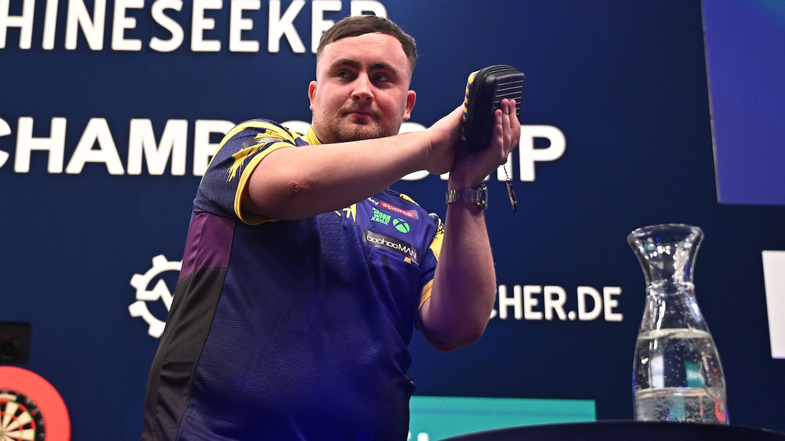

A kontinensen zajló European Tour versenysorozat ranglistájának legjobb játékosai kapnak meghívást erre a kiemelt tornára.
Az év kilencedik nagy tornája.
2026-os Európa-bajnokságot 2026. október 22–25. között rendezték meg. Littler sajnos idén sem nyerte meg a tornát, szóval még mindig ez a trófea hiányzik a gyűjteményéből.
Október vége
Dortmund - Westfalenhalle (Németország)